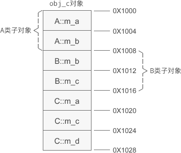

C++多继承时的对象内存模型
在《C++继承时的对象模型》一节中我们讲解了单继承时对象的内存模型，这节我们来分析一下多继承时对象的内存模型。请读者先看下面的例子：
运行结果：
A::m_a=10, A::m_b=20
B::m_b=20, B::m_c=30
C::m_a=10, C::m_c=30, C::m_d=40
A、B 是基类，C 是派生类，假设 obj_c 的起始地址是 0X1000，那么 obj_c 的内存分布如下图所示：
基类对象的排列顺序和继承时声明的顺序相同。
- #include <cstdio>
- using namespace std;
- //基类A
- class A{
- public:
- A(int a, int b);
- protected:
- int m_a;
- int m_b;
- };
- A::A(int a, int b): m_a(a), m_b(b){ }
- //基类B
- class B{
- public:
- B(int b, int c);
- protected:
- int m_b;
- int m_c;
- };
- B::B(int b, int c): m_b(b), m_c(c){ }
- //派生类C
- class C: public A, public B{
- public:
- C(int a, int b, int c, int d);
- public:
- void display();
- private:
- int m_a;
- int m_c;
- int m_d;
- };
- C::C(int a, int b, int c, int d): A(a, b), B(b, c), m_a(a), m_c(c), m_d(d){ }
- void C::display(){
- printf("A::m_a=%d, A::m_b=%d\n", A::m_a, A::m_b);
- printf("B::m_b=%d, B::m_c=%d\n", B::m_b, B::m_c);
- printf("C::m_a=%d, C::m_c=%d, C::m_d=%d\n", C::m_a, C::m_c, m_d);
- }
- int main(){
- C obj_c(10, 20, 30, 40);
- obj_c.display();
- return 0;
- }
A::m_a=10, A::m_b=20
B::m_b=20, B::m_c=30
C::m_a=10, C::m_c=30, C::m_d=40
A、B 是基类，C 是派生类，假设 obj_c 的起始地址是 0X1000，那么 obj_c 的内存分布如下图所示：

基类对象的排列顺序和继承时声明的顺序相同。
关注微信公众号「站长严长生」，在手机上阅读所有教程，随时随地都能学习。本公众号由C语言中文网站长运营，每日更新，坚持原创，敢说真话，凡事有态度。

微信扫描二维码关注公众号